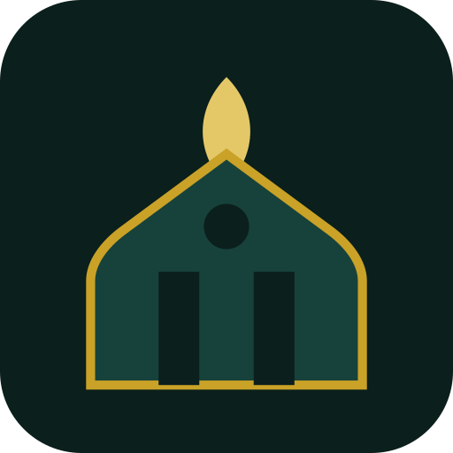

Chargement…
Muslim IA
Réponses générées par IA (Claude, Anthropic), à titre informatif : elles peuvent comporter des erreurs et ne remplacent pas l'avis d'un savant qualifié. Vérifiez toujours les références citées.
Horaires de prière
Aujourd'hui
Demain
Mois
Calcul en cours…
Position non définie.
Changer de position : onglet Qibla & position.
Image du jour
Motif géométrique généré chaque jour par l'application (pas une photographie).
Aya du jour
Chargement…
Doua du jour
Dernier article
Méthode de calcul
Ajustement des horaires (minutes)
Pour vous aligner sur votre mosquée : valeur positive = plus tard, négative = plus tôt (de −30 à +30 minutes).
Profils par mosquée
Enregistrez les ajustements ci-dessus sous le nom d'une mosquée, puis choisissez-la ici quand vous voulez.
Ramadan & calendrier Hijri
—
—
Calendrier calculé par approximation arithmétique ; confirmez les dates importantes (début du Ramadan, Aïd) auprès des autorités religieuses locales.
Direction de la Qibla
N
E
S
O
—°
par rapport au nord
Sur ordinateur, il n'y a généralement pas de capteur d'orientation : utilisez l'angle ci-dessus avec une boussole physique, ou gardez le repère N aligné avec le vrai nord. Sur un appareil tactile avec capteur, « Activer la boussole » fonctionnera.
🗺️ Carte de la Qibla (secours sans capteur)
Pour les appareils sans boussole : la ligne dorée montre la direction de La Mecque depuis votre position. La carte est chargée depuis OpenStreetMap seulement si vous touchez le bouton ; sans réseau, la ligne reste affichée.
☀️ Repère avec le soleil (sans boussole)
Géolocalisation
Position non définie.
La position GPS dépend des services de localisation de votre ordinateur (Windows : Paramètres → Confidentialité et sécurité → Localisation). La localisation par IP est approximative (précision d'une ville, parfois moins). Aucune position n'est envoyée à un serveur de l'application ; seules les requêtes de recherche (nom de lieu, mosquées) contactent des services publics.
Mosquées & halal à proximité
Recherche en direct via OpenStreetMap (API Overpass) dans un rayon de 5 km autour de la position ci-dessus.
Mosquées
Halal
Les résultats dépendent de ce que les contributeurs OpenStreetMap ont cartographié dans votre zone. Cliquer sur un résultat l'ouvre dans OpenStreetMap.
Coran — écoute des 114 sourates
Diffusion à la demande depuis mp3quran.net. Cliquez sur une sourate pour l'écouter, ou sur 📖 pour la lire.
🔎 Recherche dans le Coran (hors ligne)
Fonctionne sans réseau une fois le Coran téléchargé (bouton « Télécharger tout le Coran » plus bas).
Lecture du texte (arabe + français)
Choisissez une sourate pour la lire. Une sourate déjà ouverte ou téléchargée se lit sans connexion ; touchez 🔖 sur un verset pour y reprendre plus tard.
Coran — texte hors-ligne
Sourates très courtes et universellement mémorisées, lisibles sans connexion.
Quran.com
Texte complet, traductions, tafsir
↗
Duas & Azkar
Matin
Soir
Quotidien
Repas
Sommeil
Voyage
Épreuve
🔥 Votre série
0
jour de suite
Statistiques
Meilleure série0
Jours validés (au total)0
Jours validés (30 derniers jours)0
14 derniers jours
Badges
✅ Suivi des prières
—
7 derniers jours
Taux d'accomplissement (30 jours)0 %
Prière la plus régulière (30 jours)—
Historique (5 dernières semaines)
lunmarmerjeuvensamdim
Cliquez sur un jour pour le modifier. Les données restent sur votre appareil.
📿 Tasbih
Libre
SubhanAllah
Alhamdulillah
Allahu Akbar
La ilaha illa Allah
Astaghfirullah
La hawla wa la quwwata illa billah
0
Objectif : 33
🧮 Zakat al-mal
Vos biens
Résultat
Renseignez vos biens et les prix de l'or/argent : le calcul se met à jour automatiquement.
Estimation indicative (taux de 2,5 % ; nisab courant de 85 g d'or ou 595 g d'argent). Les avis des écoles divergent sur certains points (base du nisab, dettes, bijoux portés…), et l'élevage et l'agriculture suivent d'autres règles non couvertes ici. Pour un cas précis, consultez un savant ou un organisme de zakat de confiance. Les prix de l'or et de l'argent sont à saisir vous-même (aucune cotation en direct).
✨ Inspiration Islamique
À méditer
Chargement…
Hadith du jour
Sélection quotidienne dans Sahih al-Bukhari — texte arabe et traduction française (API publique fawazahmed0/hadith-api).
Chargement…
⭐ Mes inspirations gardées
Aucune pour l'instant.
🌙 Ramadan
—
—
—
—:—:—
Imsak --:--Fajr --:--Iftar (Maghrib) --:--
🍽️ Dua de la rupture du jeûne
Compteur de jeûnes
—
📤 Imsakiya à partager
Le calendrier des jours du Ramadan (imsak, Fajr, iftar) en une image à envoyer sur WhatsApp.
Tarawih et sadaqa
—
—
Réglages du mode Ramadan
Calendrier lunaire :
0 j
Le calcul est fait sur votre appareil, sans réseau. Le début du Ramadan dépend de l'observation du croissant dans votre pays : ajustez d'un jour si l'annonce officielle diffère, et confirmez auprès des autorités religieuses locales. Le rappel de l'iftar demande que les notifications soient autorisées.
🔔 Rappels de sunna
Choisissez les rappels à recevoir. Ils utilisent vos heures de prière et le calendrier hégirien, calculés sur l'appareil, sans réseau. Sur Android, ce sont des notifications silencieuses programmées par le système ; sur PC, un message et une notification tant que Rakeb est actif.
Prochains rappels
📖 Planificateur de khatma
📚 Les 40 hadiths de Nawawi
Textes intégrés à Rakeb (arabe et traduction française) : ils s'ouvrent sans réseau. Recherchez un thème : intention, colère, voisin, pardon…
Le recueil compte 42 hadiths (les 40 de Nawawi et 2 ajoutés par Ibn Rajab). Textes à faire relire par une personne qualifiée avant une large diffusion.
🔁 Rattrapage
🖼️ Affiches à partager
Que voulez-vous partager ?
Format
Couleurs
L'affiche est dessinée sur votre appareil, sans réseau, avec vos horaires (ajustements de mosquée compris) et votre calendrier hégirien. Sur Android, « Partager » ouvre WhatsApp, Fichiers, etc. ; sur PC, l'image est enregistrée.
Aperçu
📅 Calendrier
—
Grégorien
Hijri
lunmarmerjeuvensamdim
★ fête ou date importante · ● jours blancs (13, 14, 15 du mois hégirien, jeûne recommandé). Calendrier arithmétique : un écart d'un jour avec l'observation locale du croissant est possible.
Jour sélectionné
Cliquez sur un jour.
Prochaines dates importantes
🌙 Les 99 Noms d'Allah
Nom du jour
Audio : lecture vocale synthétique avec les voix installées sur votre ordinateur (ce n'est pas une récitation d'un qari). Traductions indicatives ; la liste des 99 noms peut varier légèrement selon les sources.
📗 Maîtriser le Coran en 365 jours
Programme progressif pour apprendre à lire le Coran : l'alphabet arabe, les voyelles et signes, les règles de tajwid, puis la lecture guidée de sourates. Les trois premières étapes sont entièrement hors-ligne ; la lecture guidée utilise le Coran déjà intégré dans l'app (texte hors-ligne pour les tout premiers jours, sinon connexion requise).
Les 4 étapes
Jour 1
Version et mises à jour
Version installée :
Notifications d'appel à la prière
Alertes de prière
Un son et une notification à l'heure de chaque prière. Fonctionne tant que Rakeb est lancé (fenêtre réduite ou en arrière-plan) ; si l'application est fermée, aucune alerte n'est envoyée.
Rappel avant la prière
Une alerte discrète (sans carillon) avant l'heure, en plus de l'alerte principale.
Prières concernées par l'alerte
Décochez une prière pour ne pas être alerté à son heure (le rappel ci-dessus la respecte aussi).
Style du carillon
Utilisé quand aucun fichier audio personnalisé n'est ajouté ci-dessous.
Son de l'adhan
Aucun fichier ajouté — un simple carillon est joué à la place.
Le fichier reste sur votre appareil (stocké localement) — il n'est jamais envoyé où que ce soit. Utilisez uniquement un enregistrement que vous avez le droit d'utiliser.
Apparence & langue
La langue ne traduit que les menus pour l'instant — les duas et le contenu religieux restent en arabe/français.
Calendrier hégirien
Aujourd'hui : —
Calculé sur l'appareil, sans réseau. L'observation du croissant peut différer d'un jour selon les pays : ajustez ici si l'annonce de votre pays est différente. Cela décale toutes les dates hégiriennes (accueil, calendrier, Ramadan).
0 j
Muslim IA (assistant)
La clé API est facultative : sans clé, Muslim IA répond avec des sources vérifiées (versets, hadiths, tafsir, horaires, duas). La clé sert seulement à des réponses plus personnalisées.
Clé API Anthropic, créée sur console.anthropic.com et facturée à l'usage par Anthropic (quelques centimes par question). La clé reste sur cet appareil ; elle n'est transmise qu'à Anthropic.
Flux d'articles (« Dernier article »)
Collez l'adresse d'un flux RSS ou Atom (site islamique de votre choix) : l'onglet Horaires affichera son dernier article. Sans flux, l'application propose un article Wikipédia du jour sur un thème islamique.
Mes données
Suivi des prières, série, zakat, favoris et réglages sont stockés sur cet appareil. Vous pouvez les sauvegarder ou les restaurer (la clé API n'est jamais incluse).
À propos
Rakeb — compagnon musulman : horaires de prière calculés localement, Qibla et géolocalisation, Coran (audio et texte), duas, suivi des prières et série, zakat, calendrier hégirien, 99 noms d'Allah et assistant Muslim IA. Les calculs se font sur votre appareil ; les contenus en ligne (Coran, hadiths, cartes, IA) utilisent des services publics tiers.


Créer · Apprendre · Innover
Version de Rakeb :
Rakeb est développé par SAOU DIGITAL LAB, pôle numérique de SAOU SYNERGY GROUP, à Mbour (région de Thiès, Sénégal).
Nous contacter
🔒 Confidentialité
Rakeb — Politique de confidentialité
Dernière mise à jour : 18 novembre 2026
1. Qui sommes-nous
Rakeb est édité par SAOU DIGITAL LAB, pôle numérique de SAOU SYNERGY GROUP, basé à Mbour, région de Thiès, Sénégal. Pour toute question : saoudigitallab@gmail.com ou WhatsApp / appel au +221 76 418 22 00.
2. L'essentiel
- Pas de compte ni d'inscription.
- Pas de publicité, pas de statistiques d'usage, pas de pistage.
- Vos données personnelles (position, suivi des prières, zakat, favoris…) restent sur votre appareil. Nous n'avons aucun serveur qui les reçoit.
- Certaines fonctions en ligne contactent des services tiers, détaillés à la section 5.
3. Données enregistrées sur votre appareil
Rakeb enregistre localement, sur votre appareil uniquement :
- vos réglages (méthode de calcul, palette, notifications…) ;
- la position utilisée pour calculer les horaires de prière et la direction de la Qibla (GPS, ville choisie ou coordonnées saisies) ;
- votre suivi des prières, votre série, votre compteur de tasbih, votre progression dans le programme de 365 jours, les noms d'Allah marqués comme appris et vos inspirations gardées ;
- les montants saisis dans le calculateur de zakat ;
- vos rappels de sunna, votre plan de khatma, vos compteurs de rattrapage, de tarawih et de sadaqa, et le Coran téléchargé pour la lecture et la recherche hors ligne ;
- une copie de sauvegarde automatique de ces données (jamais la clé API), conservée sur l'appareil ; le bouton « Envoyer ma sauvegarde » ne la transmet qu'à l'application de partage que vous choisissez ;
- l'historique de vos conversations avec Muslim IA et, si vous l'avez saisie, votre clé API ;
- (PC et web uniquement) un fichier audio d'adhan que vous avez choisi.
Ces données ne nous sont jamais transmises.
4. Autorisations demandées
- Localisation : uniquement quand l'application est ouverte et que vous demandez votre position, pour calculer les horaires et la Qibla. Vous pouvez refuser ; certaines fonctions seront alors limitées.
- Notifications : pour vous prévenir à l'heure des prières. Elles sont générées localement par l'application.
- Capteur de boussole : pour afficher la direction de la Qibla. La lecture reste sur votre appareil.
- Accès à Internet : pour les fonctions en ligne listées ci-dessous.
5. Services tiers contactés
Quand vous utilisez les fonctions concernées, votre appareil se connecte directement à ces services, qui reçoivent au minimum votre adresse IP, comme tout site web que vous consultez. Chacun applique sa propre politique de confidentialité, que nous ne contrôlons pas.
- api.alquran.cloud : texte du Coran, traductions, translittération, recherche dans la traduction et tafsir de repli (sourate, verset ou mot-clé demandé).
- api.quran.com : tafsir court d'un verset, quand vous le demandez à Muslim IA (numéros de sourate et de verset).
- api.aladhan.com : recoupement des horaires de prière, quand vous le demandez à Muslim IA ; votre position arrondie à 2 décimales est envoyée, sans identifiant.
- sunnah.com : lien de référence des hadiths, qui s'ouvre dans votre navigateur seulement si vous le touchez (aucune requête automatique de l'application).
- tile.openstreetmap.org : tuiles de la carte de la Qibla, uniquement si vous touchez « Afficher la carte » ; ce service voit votre adresse IP et la zone demandée.
- mp3quran.net : écoute des sourates (fichier audio demandé).
- cdn.jsdelivr.net (dépôt public de hadiths) : hadith du jour et hadiths demandés à Muslim IA (collection et numéro).
- api.github.com : vérification de la présence d'une nouvelle version de l'application (aucune donnée personnelle n'est envoyée).
- fonts.googleapis.com et fonts.gstatic.com (Google Fonts) : polices d'affichage de l'application.
- api.anthropic.com (Anthropic, API Claude) : fonction Muslim IA avec votre clé API, voir section 6.
- (PC et web uniquement) Overpass API / OpenStreetMap : recherche de mosquées et de commerces halal ; ce service reçoit les coordonnées de la position utilisée pour la recherche.
- (PC et web uniquement) ipapi.co : localisation approximative à partir de votre adresse IP, uniquement si vous choisissez cette option.
- (PC et web uniquement) fr.wikipedia.org (Wikipédia) ou le flux RSS que vous avez indiqué : article du jour.
- Liens externes (cartes, sites web) : ils s'ouvrent dans votre navigateur ou votre application et dépendent alors de leur éditeur.
- WhatsApp, appel téléphonique, e-mail : si vous nous contactez par ces boutons, c'est vous qui lancez l'échange. Nous recevons ce que vous nous envoyez (votre numéro ou votre adresse, votre message) et l'utilisons uniquement pour vous répondre.
6. Muslim IA
Sans clé API, Muslim IA fonctionne en mode « sources vérifiées » : il identifie localement le type de question et ne contacte que quatre services d'une liste fermée (api.alquran.cloud, api.quran.com, api.aladhan.com, cdn.jsdelivr.net), sans recherche web ouverte. Il ne génère aucune fatwa : les questions de jurisprudence sont renvoyées à un savant qualifié. Les réponses obtenues sont gardées sur l'appareil (cache) et peuvent être effacées.
Avec une clé API, Muslim IA envoie vos questions, ainsi que les derniers échanges de la conversation, à Anthropic, avec votre propre clé API. Les réponses sont générées par une intelligence artificielle : elles peuvent comporter des erreurs et ne remplacent pas l'avis d'un savant qualifié. Ne saisissez pas d'informations personnelles sensibles dans vos questions. Votre clé API est stockée uniquement sur votre appareil ; nous n'y avons pas accès. Vous pouvez la supprimer dans les paramètres de l'application et la révoquer depuis votre compte Anthropic.
7. Conservation et suppression
Vos données restent sur votre appareil tant que vous ne les supprimez pas. Pour tout effacer : désinstallez l'application, ou effacez ses données dans les réglages de votre système (sur Android : Paramètres › Applications › Rakeb › Stockage › Effacer les données). Sur PC, la section « Mes données » des paramètres permet aussi d'effacer le suivi et la série.
8. Enfants
Rakeb ne demande ni âge ni identité et ne collecte aucune donnée personnelle sur nos serveurs. Nous recommandons que les mineurs soient accompagnés d'un parent pour utiliser Muslim IA.
9. Sécurité
Vos données locales sont protégées par les mécanismes de votre appareil (code de verrouillage, chiffrement du stockage…). Nous vous conseillons d'activer le verrouillage de l'écran. Les connexions aux services tiers passent, dans la mesure du possible, par HTTPS.
10. Vos droits et contact
Comme nous ne conservons pas vos données personnelles, vous les gérez directement dans l'application. Pour toute question ou demande concernant les échanges que vous nous avez envoyés (WhatsApp, e-mail, appel), écrivez à saoudigitallab@gmail.com. Cette politique tient compte de la loi sénégalaise n° 2008-12 du 25 janvier 2008 sur la protection des données à caractère personnel ; vous pouvez saisir la Commission de protection des données personnelles (CDP) si vous estimez que vos droits ne sont pas respectés.
11. Modifications
Nous pouvons mettre à jour cette politique, par exemple lorsqu'une fonctionnalité change. La date de dernière mise à jour figure en tête de ce document.